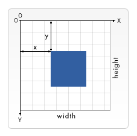
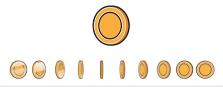

Canvas

Basic usage of canvas
The canvas is initially blank. To display something, a script first needs to access the rendering context and draw on it. The <canvas> element has a method called getContext(), used to obtain the rendering context and its drawing functions. getContext() takes one parameter, the type of context. For 2D graphics, such as those covered by this tutorial, you specify "2d" to get a CanvasRenderingContext2D.
var canvas = document.getElementById('tutorial');
var ctx = canvas.getContext('2d'); Drawing shapes with canvas
- The Grid
- Drawing rectangles
- Drawing Paths
The Grid
Drawing rectangles
<canvas> only supports two primitive shapes: rectangles and paths (lists of points connected by lines).
There are three functions that draw rectangles on the canvas:
fillRect(x, y, width, height)
Draws a filled rectangle.
strokeRect(x, y, width, height)
Draws a rectangular outline.
clearRect(x, y, width, height)
Clears the specified rectangular area, making it fully transparent.
function draw() {
var canvas = document.getElementById('canvas');
if (canvas.getContext) {
var ctx = canvas.getContext('2d');
ctx.fillRect(25,25,100,100);
ctx.clearRect(45,45,60,60);
ctx.strokeRect(50,50,50,50);
}
}
Drawing Paths
Here are the functions used to perform these steps:
beginPath()
Creates a new path. Once created, future drawing commands are directed into the path and used to build the path up.
Path methods
Methods to set different paths for objects.
closePath()
Adds a straight line to the path, going to the start of the current sub-path.
stroke()
Draws the shape by stroking its outline
fill()
Draws a solid shape by filling the path's content area.
moveTo(x, y)
lineTo(x, y)
arc(x, y, radius, startAngle, endAngle, anticlockwise)
arcTo(x1, y1, x2, y2, radius)
Using images
Importing images into a canvas is two step process:
- Get a reference to an HTMLImageElement object or to another canvas element as a source.
- Draw the image on the canvas using the drawImage() function.
The canvas API is able to use any of the following data types as an image source:
- HTMLImageElement
- SVGImageElement
- HTMLVideoElement
- HTMLCanvasElement
Transformations
scale(x, y)
Basic animations
Basic animation steps
- Clear the canvas
- Save the canvas state
- Draw animated shapes
- Restore the canvas state
Controlling an animation
Shapes are drawn to the canvas by using the canvas methods directly or by calling custom functions. In normal circumstances, we only see these results appear on the canvas when the script finishes executing. For instance, it isn't possible to do an animation from within a for loop. That means we need a way to execute our drawing functions over a period of time.
Optimizing canvas
- Pre-render similar primitives or repeating objects on an offscreen canvas
- Avoid floating-point coordinates and use integers instead
- Don’t scale images in drawImage
- Use multiple layered canvases for complex scenes
- Use plain CSS for large background images
- Scaling canvas using CSS transforms
More tips